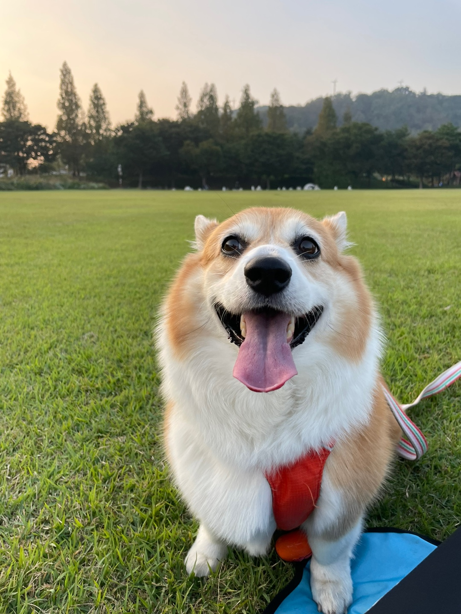

우리 솔이는 너무 귀엽고 예쁘고 사랑스럽고 다 함. 귀여운 거 최고야!
박솔이는 6살 웰시코기이다. 몸무게는 약 16kg 정도이고, 근육과 지방이 적절히 섞여있는 아주 귀여운 몸을 가졌다. 솔이의 별명은 뚀리, 공또, 애기, 강아지, 강쥐 등이 있다. 이거 완전 이름은 하나인데 별명은 서너가지인 강아지네..
솔이는 아침에 일어나면 엄마와 언니들을 괴롭혀 옥상에 올라가 실외배변을 한다. 그러고 나면 우유와 밥을 먹는 것으로 하루를 시작한다. 아침 식사 후엔 다시 잠을 잔다. 강아지들은 하루에 13시간 정도는 자야 한다고 한다. 잘 때는 완전 천사가 따로 없다. 오후까지 늘어지게 자다보면 몸이 슬슬 근질거리는데 이때 책상에 앉아있는 정혜언니를 괴롭히러 간다. 공 들고 옆에 앉아서 눈빛쏘기를 시전하면, 운 좋은 날은 개구리 놀이를 할 수 있다. 근데 이 언니가 좀 귀찮으면 바닥에 누워서 시간을 보낸다. 4시쯤 되면 두번째 똥을 배출해야 하기 때문에 문 앞에 서서 가족들에게 눈치를 준다. 그러면 정혜언니가 주섬주섬 옷을 챙기고 현괸문을 열어준다. 상코기는 문이 열리면 절대 뒤를 돌아보지 않는다. 똥줍이 완료되면 그때부터는 공놀이 시작이다. 아오 신나. 정혜언니랑 우다다 몇 번하고, 공놀이 신나게 하다가 앉아서 쉬었다를 반복하다 보면 엄마가 밥 먹으러 오라고 부른다. 그럼 또 내려가줘야지. 내려가서 제일 싫어하는 발 닦기를 하고 사료를 와앙 먹는다. 잘 안 먹으면 엄마랑 언니들이 붙어서 먹여준다. 완전 상전이네.
아무튼 저녁식사 후엔 엄마 침대에서 파바박 좀 하고 지혜언니랑 공놀이 5번 정도 하면 간식 먹을 시간이다. 손 한번 주고, 배 한 번 보여주면 간식은 내꺼. 먹고 공놀이 몇 번 더 하다보면 노즈워크 시간이 온다. 종이컵 뜯거나 공 굴려서 먹거나 그때 그때 다르다. 공짜 간식 최고. 그러면 벌써 10시가 넘는다. 이제 잘 시간이다. 물 한 번 먹고 맨날 책상에 앉아있는 정혜언니 다리에 콧물 쓱 뭍이고 언니 방 커튼 밑에 쏙 들어가서 누우면 빛 차단 완료. 눈 감으면 꿈나라로 출발하고, 그렇게 솔이의 하루가 지나간다.